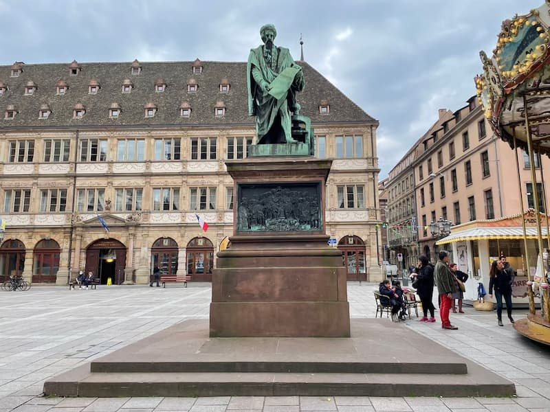

A historic city on the Rhine River and the birthplace of Johannes Gutenberg. Mainz is celebrated for its central role in the spread of printing technology in the 15th century, which helped ignite the Printing Revolution and made books more accessible across Europe. Today, the city blends medieval heritage with modern life, featuring landmarks like the impressive Mainz Cathedral and museums dedicated to printing history, while its old town offers charming streets, half-timbered houses, and a vibrant cultural scene shaped by centuries of scholarship and trade.
